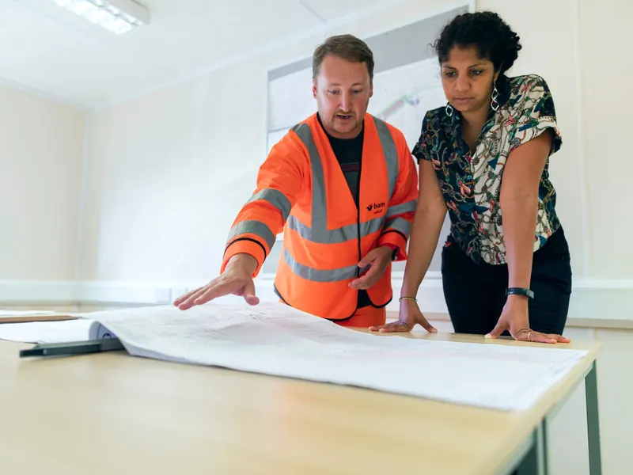

Founded in Bengaluru, 2015
Industrial documentation, liaison and construction across Karnataka.
From land allotment and statutory NOCs to factory construction, we take on the paperwork so industrial promoters can build and grow without bureaucratic delay.
Archived project documentation & KIADB paper trails

On-site technical consultation & sanction drawings
KAIDS began in 2015 with one observation: Bengaluru's industries had nobody dependable to run their paperwork with KIADB and the departments around it.
Our story
Gurunath and Tejas Vernekar founded Karnataka Industrial Documentation Services to bridge that gap. What started as direct liaison work on KIADB files has evolved into a complete industrial documentation, statutory compliance, and project execution practice.
Experience and expertise
Over a decade of on-ground experience across Karnataka's key industrial corridors. Our team handles complex documentation, regulatory approvals, and project management—from initial allotment to turnkey industrial shed construction.
Our motivation
Every hour an industrialist spends following up on files is an hour taken away from business growth. We assume the full administrative burden so clients can focus on expanding production with complete peace of mind.
Statutory Liaising & Approvals
Direct day-to-day liaison with KIADB, KSPCB, Fire and Emergency Services, BESCOM, and local planning authorities to secure clearances without unnecessary delays.
Civil & Industrial Construction
Tailored warehouse sheds, boundary compound walls, ETP/STP installations, and demolition with metal scrap buyback, executed to engineering standards.
Legal Due Diligence & Title
Detailed verification of lease-cum-sale agreements, absolute sale deeds, mortgage permissions, and dispute resolution for industrial land holdings.
Complete Archival Record
We maintain an indexed, audit-ready physical and digital repository of every submission, sanction order, and compliance certificate for your permanent records.